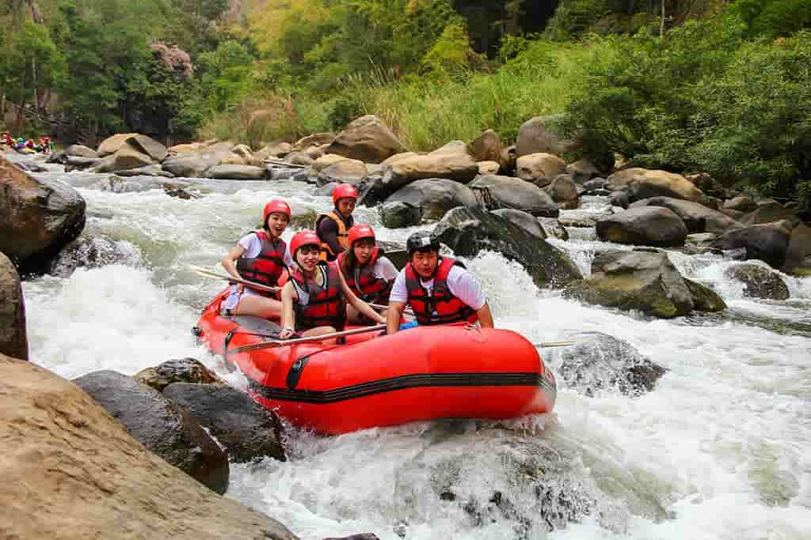
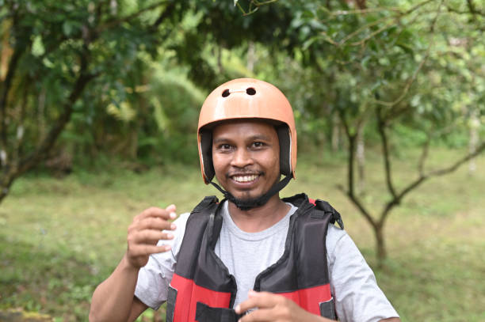

White Water Rafting Co.
Our Mission

Our mission is simple: introduce people of all ages to the thrill of safe, expertly guided white water
rafting. We provide trained guides, top-quality equipment, and unforgettable adventures for families,
groups, and solo travelers. Adventure, safety, and stewardship of the river are at our core.
History
Founded in 2012 by outdoor enthusiasts, White Water Rafting Co. began as a small operation with a single raft
and a passion for river stewardship. Over the years we have grown into a team of certified guides focused on
safety, conservation, and providing transformational outdoor experiences.
Today, our company proudly welcomes adventurers from across the globe, offering diverse rafting routes for families, beginners, and thrill-seekers alike. Through strong community partnerships and eco-friendly practices, we inspire unforgettable journeys while preserving rivers for future generations to enjoy.